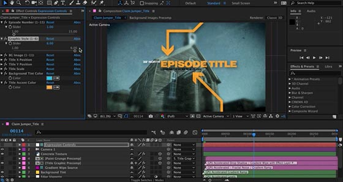

Le Monde Informatique
Adobe After effecter

After Effects s'apparente à un logiciel de montage vidéo, notamment avec la "timeline" qui permet de savoir ou l’on se situe dans le temps par rapport à la Prévisualisation. Le logiciel utilise un système d'empilement de calques pour créer une composition animée à partir de différentes sources visuelles (images et vidéos). On retrouve ce principe d'empilement de calques dans la majorité des logiciels de création graphique. Par cet aspect, il est proche de Photoshop, mais propose en outre des modifications des calques animables dans le temps, et en mode non destructif. On qualifie ce mode de fonctionnement de « non destructif » car le fichier de projet créé ne contient que les informations de traitement des sources, sans aucune altération des fichiers originaux. Pour calculer le rendu final de l'animation, il faut donc disposer du fichier de projet ainsi que des sources intactes (images ou vidéo). On peut réaliser un montage sans sources préexistantes. Dans ce cas, le fichier projet se suffit à lui-même. Dans tous les cas, pour obtenir le résultat final, et produire un nouveau fichier vidéo par exemple, il faut passer par une phase de calcul, d'une durée variable selon la complexité de la création. Contrairement à un logiciel de montage vidéo, After Effects ne propose pas de visualisation en temps réel. Chaque phase de prévisualisation est précédée d'une phase de calcul en RAM. After Effects est conçu pour empiler les images et les vidéos les unes sur les autres sur la timeline. Par exemple il est impossible de fractionner une image en plusieurs parties sans créer un autre Calque. Le logiciel est utilisé pour les effets spéciaux car il y a des générateur d’effets comme “world particules” qui crée des particules dont la physique (vélocité, vitesse...) et la forme (duré de vie des particules, radiale des particules…) sont personnalisable. Mais on trouve aussi des possibilités d’animation de masques (qui permettent de cacher une partie de l'image pour « voir » ce qu'il y a en dessous), d'incrustation, de transition, de match moving, de caméra, de lumière… En d’autres termes ce logiciel a pour but de manipuler et transformer l’image et non de monter ou assembler.
| Disigned by |